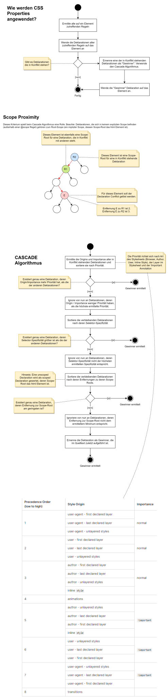

Use the Windows Store to install this app.
winget install Git.Git
If you work on the host use path T:\schenker\frontend-development.git.
If you want to work in a virtual machine follow these steps instead:
192.168.0.10192.168.0.11192.168.0.11Create the file .gitconfig in your home directory. Add the following lines to the file:
[user]
name = Your name
email = Your email address
IMPORTANT: Don't work in the cloned repository! It's only used to share data with the students! Create your own directory for work.
Either download it on the web or use winget install Microsoft.VisualStudioCode.
Install the Live Server Extension for Visual Studio Code.
Ensure you are in the frontend-development directory when you execute git pull.
Create a new text file update.bat on your desktop with the following content:
@echo off
cd .\frontend-development
git pull
pause
Das Frontend bildet die Schnittstelle zum Benutzer. Der Benutzer kann im Frontend Aktionen ausführen, Daten eingeben und sich anzeigen lassen. Die Verarbeitungslogik steckt jedoch im sogenannten Backend.
Das Backend besteht aus einem oder mehreren Servern. In der Regel enthält das Backend einen Webserver und einen Datenbankserver. Weitere Dienste wie Identitätsmanagement und Authorisierung können ebenfalls vom Backend angesprochen werden.
Frontend und Backend kommunizieren über das HTTP-Protokoll. Ein Frontend kommuniziert nicht direkt mit der Datenbank, sondern schickt lediglich eine Anfrage an das Backend. Das Backend wird dann alle notwendigen Maßnahmen treffen, um die Daten aus der Datenbank zu lesen.
Backends können mit zahlreichen Programmiersprachen und Frameworks entwickelt werden. Ein paar Beispiele:
Frontends werden meist mit JavaScript bzw. TypeScript entwickelt. Sofern die WebAssembly Technologie in Zukunft von allen modernen Browsern vollständig unterstützt wird, lassen sich Frontends dann auch in beliebigen Programmiersprachen entwickeln. Ein paar Beispiele für Frontend Frameworks:
Beim Client-Side-Rendering (CSR) wird das HTML Dokument dynamisch "gefüllt". Der Server sendet lediglich ein fast leeres HTML Dokument inklusive der Anwendung als gebündelte JavaScript Datei (app.js) an den Client. Der Client holt sich im Anschluss Daten vom Server und generiert daraus neue Elemente im HTML Dokument. In der Regel werden JSON Dokumente zwischen Client und Server ausgetauscht. Beispiel: Die React Library verwendet standardmäßig CSR, kann aber auch im SSR Modus betrieben werden.
Beim Server-Side-Rendering (SSR) schickt der Server i.d.R. ein vollständiges HTML Dokument an den Client. Der Client muss hier lediglich das Dokument anzeigen, aber nicht selbst ergänzen bzw. füllen. Bei Anfragen vom Client werden komplett neue HTML Fragmente vom Server erzeugt und an den Client zurückgeschickt. Beispiel: Eine klassische PHP Anwendung rendert das gesamte Dokument auf der Serverseite und schickt das Ergebnis an den Client zurück.

Wenn HTML Elemente visualisiert werden, entstehen eine Reihe sogenannter Boxes. Eine Box enthält weitere geschachtelte Boxen:

Die Dev-Tools zeigen die oben genannten geschachtelten Boxen an.


Eine Block-Level Box wird in ihre eigene Zeile gesetzt. Inline-Level Boxen werden horizontal in einer Linie angeordnet und ggf. auf die nächste Zeile umgebrochen.
Block-Level-Boxen verwenden standardmäßig die Breite ihres Elterncontainers. Inline-Level-Boxen verwenden nur die absolut notwendige Breite.
Vertikaler Margin wird bei Block-Level-Boxen zusammengelegt (collapse). Margin hat bei Inline-Level-Boxen keinen Effekt.
Horizontaler Margin wird sowohl von Block-Level-Boxen als auch Inline-Level-Boxen berücksichtigt, aber nicht zusammengelegt (collapse).
Vertikaler Padding wird bei Inline-Level-Boxen zwar berücksichtigt, allerdings hat dies keinen Effekt auf das Layout.
Hinweis: Für jedes Element kann sowohl ein Outer Display Type sowie ein Inner Display Type festgelegt werden.
Beispiele:
display: inline block setzt outer display type auf inline aber der innere Display Type ist block.display: flex setzt outer display type auf block aber inner display type ist flex.Die CSS Cascade ist ein Algorithmus der festlegt, welche der miteinander in Konflikt stehenden Deklarationen schlussendlich auf ein Element angewendet wird.
Die CSS Cascade verwendet für die Entscheidung folgende Kriterien:
Hier folgt der detaillierte Algorithmus:

Die Spezifizität setzt sich aus 3 Komponenten zusammen, wobei die erste Komponente den höchsten Stellenwert besitzt und die dritte Komponente den niedrigsten Stellenwert.
Um zwei Spezifizitäten zu vergleichen, führe einen schrittweisen Komponentenvergleich durch. Vergleiche zuerst die ersten Komponenten. Falls diese gleich sind, vergleiche die zweiten Komponenten und falls diese auch gleich sind die dritten Komponenten miteinander. Sobald bei einem Vergleich eine Komponente größer ist als die andere, steht fest, welche Spezifizität größer ist.
Tipp: Stell dir die Spezifizität wie eine Programmversion vor. Die erste Komponente ist die Major-Version, die zweite Komponente ist die Minor-Version und die dritte Komponente ist die Patch-Version.
Beispiele:
(1, 0, 12) > (1, 0, 0)
(0, 1, 0) > (0, 0, 12)
Hierzu werden alle Teilselektoren eines Selektors betrachtet und deren Wertigkeiten aufaddiert.
Combinators tragen nicht zur Spezifizität bei.
Beispiel:
div.wrapper.block-level > a p {}
Der Selektor hat die Wertigkeit (0, 2, 3), denn es gibt 3 Elementselektoren (div, a, p) und 2 Class-Selectors (.wrapper und .block-level). Der Combinator > spielt keine Rolle.